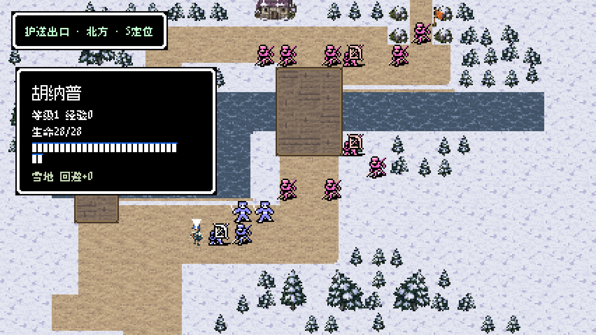
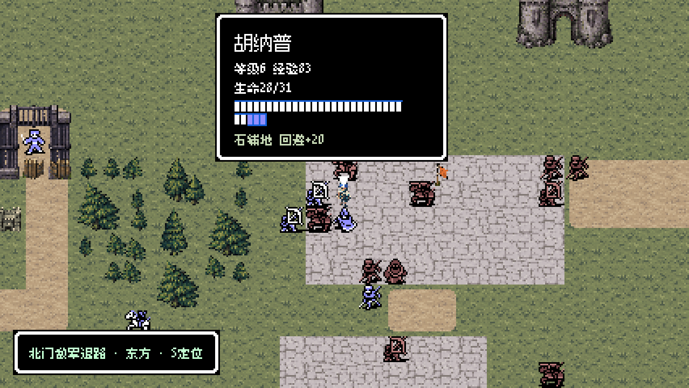
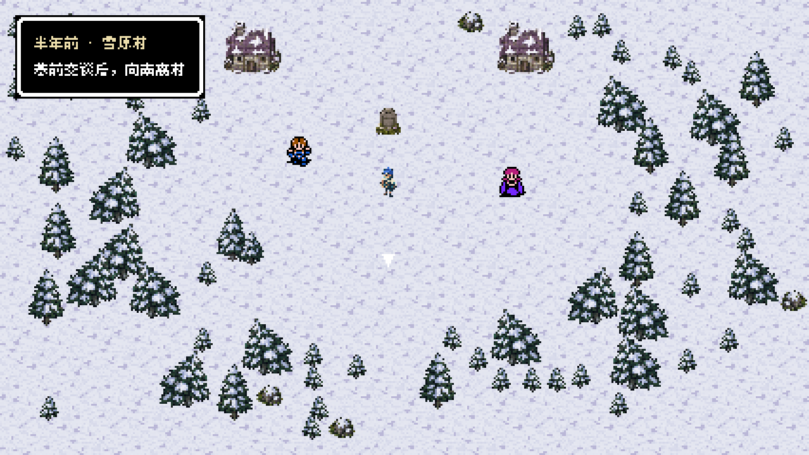
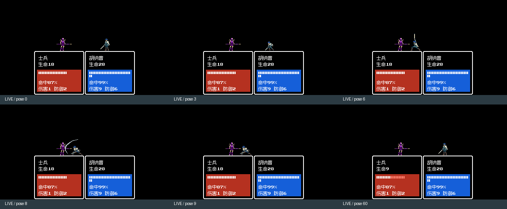
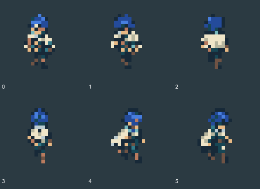
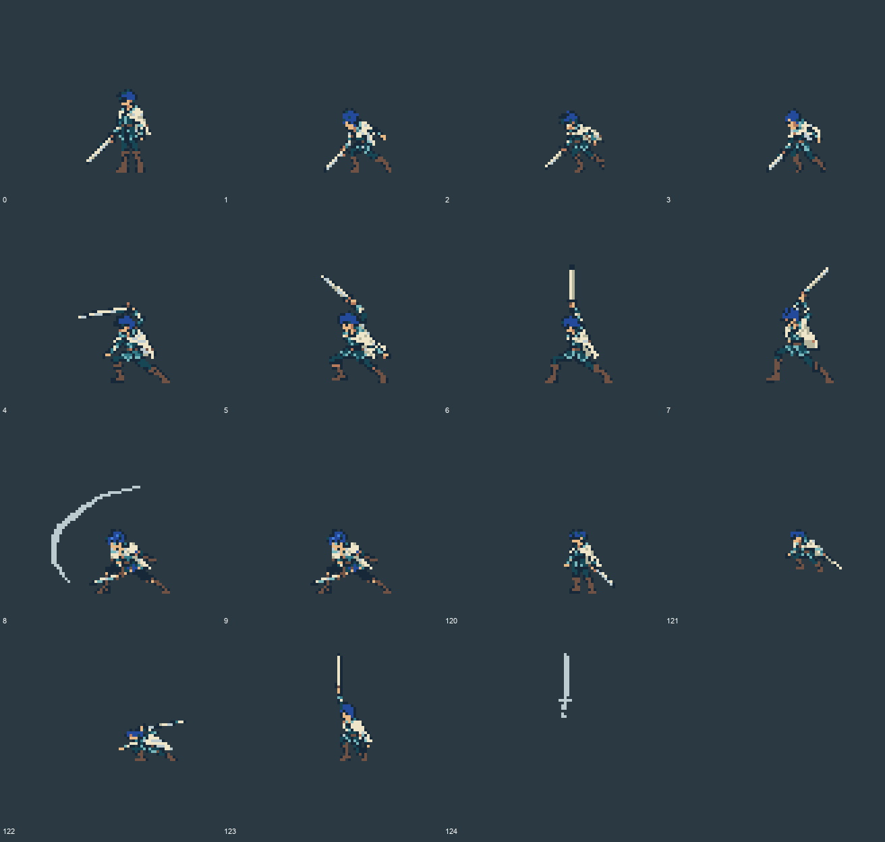
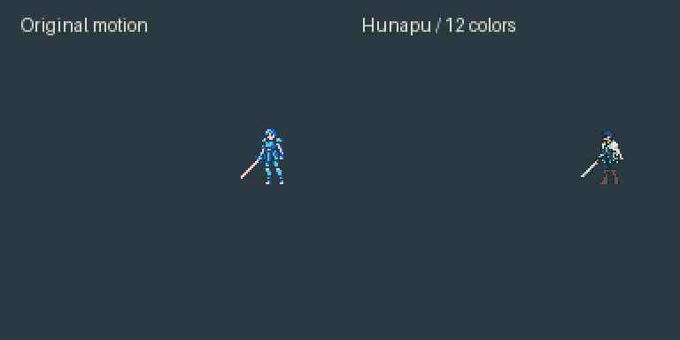
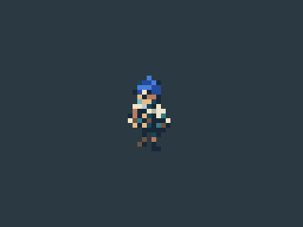
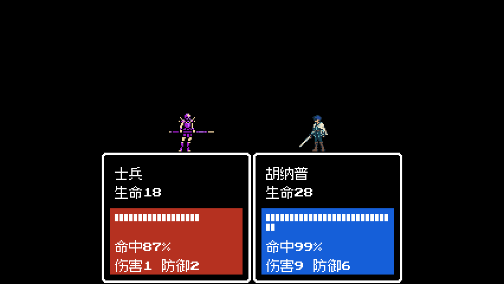
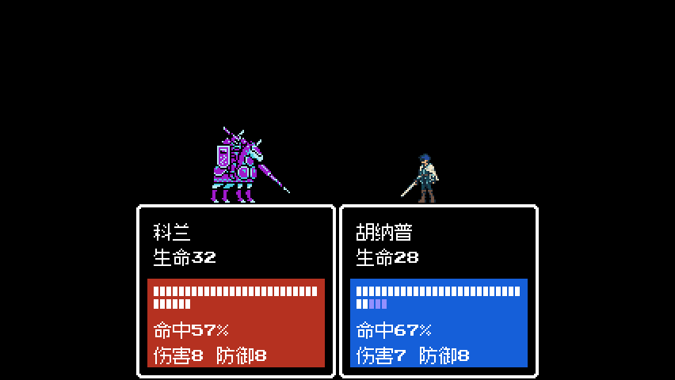

REVENGE MEMORIES / 0.5.1
胡纳普：画像、职业与动作统一
仅胡纳普本人。蓝发、青色轻甲、米白短披风与单手直剑；最终运行素材共用12个实色＋透明色，减去细碎花纹。现有已选画像继续复用。
52项动画检查、31个引擎姿势/朝向（4975个前景像素差异为0）、20项独立签名包检查通过。
两轮真实按键试玩已完成。M11第3回合护送失败，M15第4回合胜利；两轮新动作与文字安全检查通过。败局保留，不宣称两轮全胜。
实机截图

第1轮 · M11实际入场新游戏经序章、据点和世界行进入场；角色卡显示胡纳普。

第2轮 · M15实际战场读取历史部署存档，经正常整备重新入场；第4回合胜利。

据点 · 胡纳普向下站姿冻结姿势夹具：仅检验显示与足点，不作为自然通关证据。

第1轮 · 真实攻击关键帧实际按键触发的助跑、举剑、下劈与回位。
最终12色设计稿

地图小人 · 原生24×24，内容保持地块尺度

战斗原生80×72 · 当前16帧含重复待机及原特效轮廓
1:1角色前景核对
左：最终原生像素稿。右：引擎视口原坐标裁取（含画面底边的HUD）。逐像素校验仅比较角色不透明前景，31个姿势/朝向累计4975像素无差异。这里是明确标记的显示夹具。
动作与行走对比

原程序时序重放左旧素材，右新素材；相同85准备＋104收势tick、位移、镜像和单次接触边界。此图为素材程序重放。

12色方向与双帧步态上下侧各两帧，左行镜像；游戏继续使用原路径插值与步频。

第1轮 · 实机攻击慢放真实输入产生的连续视口帧，便于观察而慢放；不是墙钟帧率测量。

第2轮 · 实机攻击慢放旧存档装备与成长保留；前两次主角攻击关闭instant，执行完整原程序。
两轮范围与记录
| 轮次 | 路径与结果 | 检查 |
|---|
| 1 / M11 | 新游戏→序章→据点→世界→第一战。第3回合流民队1被击倒，任务失败。 | 前两次主角攻击完整播放，姿势0—9/60均捕获，无文字越界。完整记录 |
| 2 / M15 | 真实旧部署存档→正常整备装备→重新入场。第4回合胜利。 | 前两次主角攻击完整播放，姿势0—9/60均捕获，无文字越界。完整记录 |
两轮均无数值、HP、位置或随机种子编辑，无强制胜利。普通剑命中/落空及现行雷电剑近/远程序另有定向检查。本次未重复两章15关全量回归，未新增未开发章节、转职或能力。
后台防抢焦点保护＋离屏视口捕获。实机截图为原生426×240或整数最近邻放大副本。直接打开 actual/dist/RevengeMemories.app（0.5.1），退出旧进程后重开即可继续原存档。